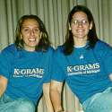
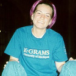

|

(Jen is on the right)
|
Jennifer Bess, Alice
Lloyd Letter Head
Sophomore, Elementary Education and Spanish
Jennifer is hardworking, dedicated
and motivated. She enjoys working with and on behalf of disadvantaged
children. Whenever there is a problem Jenni will listen and help
to solve the problem any way she can.
When I grow up I want to be - a teacher
One unique thing about me
- Involved in gymnastics for eight
years
I want to see this in K-grams for
'99/'00 - I want everyone to know those
that they will be working with. I also want everyone at every
level to know and fulfill the obligations of his/her position.
Also more activities involving big and little kids.
|
|
Amy Kirsch,
Alice Lloyd Project Head
Sophomore, Pre-Business
Amy is excited about having great
projects this year at K-grams. She hopes to have a great semester,
and try to put some time into studying. She can't wait to see
what the rest of the year brings.
When I grow up I want to be - I don't want to grow up.
One unique thing about me
- I'm compulsively neat
I want to see this in K-grams
for '99/'00 - Success in projects!
|
(Amy is on the left)
|
|
|
Amy Renee Christiansen,
Bursley Letter Head
Sophomore, Elementary Education
Amy is short, blond, bouncy, and energetic.
She loves kids and teaching swimming lessons. She loves the Carribbean
and wants to live on an island someday with her dog and a Volkswagen
beetle.
When I grow up I want to be -
An elementary school teacher and maybe a sports
coach.
One unique thing about me
- I can do four back handsprings in a row
I want to see this in K-grams
for '99/'00 - Have more penpal/college kid
interaction besides the Kids-Fair.
|
|
Catherine Ong,
Bursley Project Head
Sophomore, Pre-Business or Economics and Statistics
Friendly, quiet, cheerful.
When I grow up I want to be -
A teacher
One unique thing about me
- I'm a very good listener :)
I want to see this in K-grams
for '99/'00 - More interaction with the kids and also the committee!
|
|
|
|
Sara Rowe,
Couzens Letter Head
Sophomore,Undeclared
Sara is a nice person who works
hard at whatever she does. She likes to help people, play with
little kids, and do other fun stuff.
When I grow up I want to be - Good question!
One unique thing about me
- Ummmm...I play hockey.
I want to see this in K-grams
for '99/'00 - I want to see kids get excited
about reading and writing because of k-grams!
|
|
Vanessa DeSousa,
Couzens Project Head
Junior, Elementary Education and Biology
Vanessa is excited to be part of K-grams this
year. She loves kids lots and lots...all of them. Tooo long!
When I grow up I want to be - a teacher
One unique thing about me
- ?
I want to see this in K-grams
for '99/'00 - A penpals reading day or time
where the college and elemantary kids read together...or a penpals
field trip somewhere maybe...
|
|
|
|
Catherine Docherty,
East Quad Letter Head
Sophomore, Undecided
Cat loves K-grams. Cat is a picky eater. Cat's
favorite band as of lately is the Dixie Chicks.
When I grow up I want to be - happy.:)
One unique thing about me
- I am adopted
I want to see this in K-grams for '99/'00 - I want more people to get involved
in K-grams this year.
|
|
Beth Killian,
East Quad Project Head
Sophomore, Fine Arts
Beth is a hardworker and very
energetic. She will do anything for a friend.
When I grow up I want to be - Big Bird
One unique thing about me
- I have purple hair and eyes!
I want to see this in K-grams
for '99/'00 - I want all the elementary schools
to have the most and the best projects they've ever had!
|

|
|
(Bean is on the right)
|
Danielle
Bean, Markley Letter Head
Senior, Secondary Education (English and Political
Science)
(This is really hard, but here goes) Danielle
rocks!! Danielle can do anything if she sets her mind to it. Danielle
needs to work on better time management.
When I grow up I want to be - A school administrator
One unique thing about me
- I want to go into the Peace Corps
I want to see this in K-grams
for '99/'00 - More smiles. Tutoring aspect,
possibly branching out into middle schools.
|
|
Sonia Liu,
Markley Project Head
Junior, Psychology/BioAnthro-Zoology
Sonia is a kooky person who likes looking at
the stars. She also enjoys driving in her car (named Veolette)
with the music full blast and singing too loudly.
When I grow up I want to be - If I survive through it all...pediatric orthopedic
surgeon
One unique thing about me
- Spontaneous laughter
I want to see this in K-grams
for '99/'00 - More interaction between penpals,
such as a day to make crafts/gifts for their parents/each other/whoever.
|
(Sliu is on the left)
|
|
|
Laura Kao,
MoJo Letter Head
Sophomore, Industrial and Operations Engineering
Laura is neat. She has good hygiene.
She likes kids.
When I grow up I want to be - Rishi
One unique thing about me
- I can fold my tongue backwards
I want to see this in K-grams
for '99/'00 - An awesome kids fair.
|
|
Scott Ottolini,
MoJo Project Head
Junior, Biology
He likes to work with people. He is fun to
be around once you get know him. He has to hard time writing about
himself in the third person because he doesn't like talking himself
up.
When I grow up I want to be - A doctor but I don't plan on growing up.
One unique thing about me
- My first and last name run together
to make one word: Sc(ott)olini
I want to see this in K-grams
for '99/'00 - More interaction between the
UMers and the kids.
|
|
|
|
Eugenia Edmonds, Stockwell
Project Head
Junior, Music & Psychology
Eugenia is a motivated, happy,
20-year-old woman who is currently studying music and psychology.
She plans to teach and/or save the world (!) and is always searching
for meaningful and exciting thigns and people to fill up her life.
Her life gets pretty full sometimes, but she believes whatever
doesn't kill her makes her stronger!
When I grow up I
want to be - Happy and thoughtful and altruistic
One unique thing about me
- I can fall asleep while walking down the
street! (well, almost...) Also, I am the only one in K-grams who
can spend 5 months writing my bio. :)
I want to see this in K-grams
for '99/'00 - I want to see the pride of
a teacher whose student is enjoying reading and writing because
of their pen pal letter. I also want to see the program grow and
organize into a regular res hall institution!
|
|
Ashley Scott,
South Quad Letter Head
Junior, Movement Science
She's the coolest person in the world. Just
kidding. No really, she's easy-going and laid back. She may be
quiet at times but she's just taking everything in. She loves
helping people the best way she can.
When I grow up I want to be - Physical therapist/Athletic trainer
One unique thing about me
- I never wear shorts
I want to see this in K-grams
for '99/'00 - I would like to have more meetings
with the kids in their classrooms.
|
(Ash is on the left)
|
|
(Lacea is on the right)
|
Lacea Curtis,
West Quad Project Head
Junior, History (possibly Women's Studies)
Lacea is an open minded individual. She is
outgoing and tries to be friendly to everyone she meets. Lacea
also likes to be involved in campus activities to keep college
exciting!
When I grow up I want to be - Teacher (secondary education), maybe lawyer
One unique thing about me
- I have 10 brothers and sisters,
and am the oldest
I want to see this in K-grams
for '99/'00 - More interaction between the
students that are involved in K-grams! This retreat is a great
start. :)
|
|